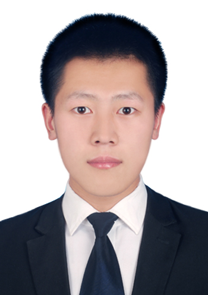

|

|
Xiaoqiang Cheng | 程晓强
我于2021年硕士毕业于天津大学，硕士阶段进行自动驾驶感知技术相关研究，主要针对基于LiDAR的目标检测和跟踪任务。毕业后我加入驭势科技（UISEE）成为一名自动驾驶感知算法工程师，并工作至今。因此，我具备多年的自动驾驶感知算法研究和落地经验。
在学习和工作期间，在团队的共同努力下，我们参与了很多自动驾驶相关竞赛并获得不错的成绩，也曾经参与过一些顶会文章。
你可以通过以下方式 了解 & 联系 我
Email /
CV /
知乎 /
Blog /
Github
|
|
Summary
我从事自动驾驶行业感知技术相关工作。擅长基于深度学习2D & 3D目标检测、跟踪、分割等视觉任务。曾参与、设计并实现多种SOTA的视觉方法。曾多次参加自动驾驶挑战赛（实车&仿真竞赛）和相关视觉任务竞赛（like CVPR challenge），在团队协作下获得不错的成绩。
此外，具备深度学习方法的落地部署经验，TensorRT加速SNPE量化等。熟悉NV平台的自定义算子实现，CUDA并行加速等。
除自动驾驶技术外，我擅长UI编程，喜欢制作一些有趣的工具，例如 Oviz (一个便捷的视觉任务可视化工具)。
我热爱技术，喜欢运动(打球，徒步)，希望做一些有趣和有影响力的事情。
|
- 程晓强,等. 目标匹配方法、装置、设备及存储介质[P]. 北京市：CN202111474736.9
- 程晓强,等. 多目标匹配方法、装置、电子设备和存储介质[P]. 北京市：CN202211562631.3
- 程晓强,等. 闸机开度检测方法、装置、设备、介质及车辆[P]. 北京市：CN202211184169.8
- 程晓强,等. 目标检测方法、装置、电子设备和存储介质[P]. 北京市：CN202310583887.0
- 程晓强,等. 非极大值抑制方法、装置、电子设备和存储介质[P]. 北京市：CN202311733978.4.
- 程晓强,等. USEG点云语义分割标注系统[CP]. 北京市: 2024SR0534619
- 2024 ICRA RoboDrive Challenge Robust Occpancy Prediction 1st Place
- 2021 NeurIPS Panoptic nuScenes challenge 1st Place
- 2020 年第四届世界智能驾驶挑战赛决赛一等奖
- 2017 年“瑞萨杯”全国大学生电子设计竞赛二等奖
- 2016 年国际ICAN创新创业大赛全国二等奖
- 2016 年河北省“TI杯”电子设计竞赛二等奖
Copyright@Xiaoqiang Cheng 2024. Template is modified from Jonbarron.
|
|